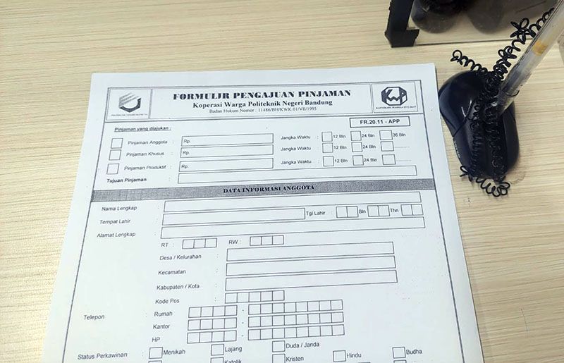

Koperasi Warga Polban
Koperasi Warga Polban
TAHAKHU ( Tabungan Harian Khusus ) merupakan simpanan anggota Koperasi yang penyetoran dan pengambilannya dapat dilakukan dengan ketentuan dan syarat yang ditetapkan oleh koperasi
Simpanan Berjangka ( DEPOSITO ) adalah merupakan simpanan anggota koperasi yang pengambilannya dapat dilakukan setelah jangka waktu tertentu, berdasarkan kesepakatan antara anggota penyimpan dengan koperasi.
Pinjaman Anggota adalah pinjaman yang tujuan penggunaannya untuk dapat memenuhi rasa tenang dan layak bagi peminjam, misalnya untuk pendidikan, kesehatan, hajatan, rekreasi. Sumber pembiayaan pinjaman berasal dari sumber internal (simpanan saham anggota)dan sumber eksternal (seperti pinjaman Puskopdit). Ketentuan dan syarat pinjaman anggota : Mengisi formulir permohonan pinjaman dengan lampiran Photocopy kartu anggota koperasi, Photocopy identitas diri yang masih berlaku, Photocopy slip gaji terakhir (PNS dan Kontrak) (Khusus kontrak : Melampirkan surat kontrak kerja).

A.Pinjaman Darurat
Pinjaman darurat adalah pinjaman yang tujuan penggunaannya untuk mengatasi keadaan yang sifatnya sangat mendesak dan tidak dapat ditunda, misalnya biaya rawat inap rumah sakit, biaya penebusan obat, biaya karena terkena musibah, dan lain-lain.
B.Pinjaman Khusus
Pinjaman khusus Internal / Pengadaan Barang adalah pinjaman yang tujuan penggunaannya untuk kebutuhan khusus anggota, yang persetujuannya setelah dipertimbangkan oleh pengurus . Pengadaan barang dimaksudkan disini adalah pengadaan barang yang tujuannya untuk membantu kelancaran dan rasa tenang anggota/karyawan dalam menjalankan pekerjaan sehari-hari. Misalnya Pembelian rumah, kendaraan roda dua, laptop, bahan bangunan rumah, perlengkapan rumah tangga. Produk ini akan dilaksanakan secara insidentil dan sejauh angsuran tidak memberatkan anggota.
Pertanyaan Seputar Produk Koperasi (Senin-Jumat jam 08.00-16.00):